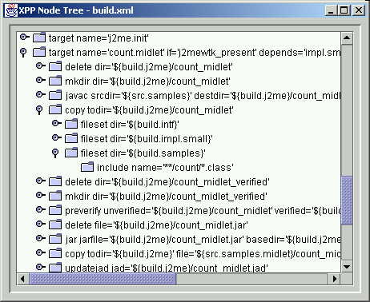

For description of how to run J2ME samples see separate document.
First make sure to add JUnit 3.7 to CLASSPATH and add to CLASSPATH Pull Parser 2 JAR and directory with compiled samples and tests. Optionally add Xerces 2 jar file to use XPP2 implementation that is based on Xerces XNI. To implement fully XPP2 interfaces it was necessary to patch Xerces 2 and both patch and jar file of modified Xerces are available in lib\xerces2_patched so jar file can be added to use Xerces 2 based implementation of XPP2.
The CLASSPATH to use may look like this:
set CLASSPATH=build\samples;build\tests;build\lib\PullParser_VERSION.jar;lib\junit\junit37.jar;lib\xerces2_patched\xercesImpl_2_0_1_event_position_patch.jar
To verify that XPP2 is working automatic JUnit tests must be executed first:
ant junit
If ant is not available use following command instead:
java AllTests
Expected output should say OK reporting number of tests run, ex:
........ Time: 0.431 OK (8 tests)

This is simple sample that demonstrates how to use XML Pull Parser and with different options. In the most basic setup it dumpls file content and provides some statistics about it. It can be also used to measure speed of parsing.
java standard.XppCountMain -help
Example invocations:
java standard.XppCountMain build.xml java standard.XppCountMain build.xml -s 1000 java standard.XppCountMain build.xml -s 1000 -H
java swing.XppNodeTree build.xml
[Back To Pull Parser 2 Documentation]